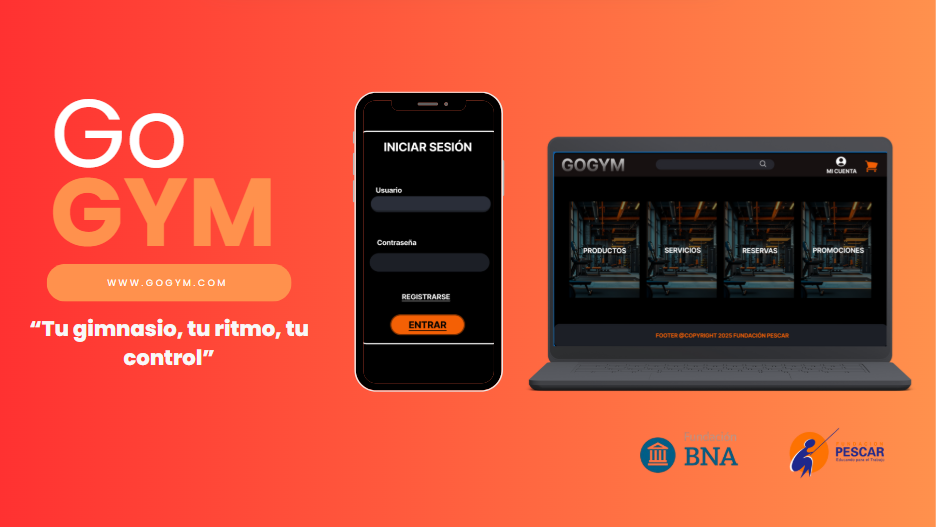

(Página en Construcción )
Plataforma de gestión para gimnasios con una API REST robusta para el control de usuarios, membresías y control de acceso.

Descripción
GoGym fue el Proyecto Integrador para la Fundación Banco Nación y Fundación Pescar. Como Desarrollador Backend, mi responsabilidad fue diseñar, construir y desplegar la API REST completa desde cero. El objetivo fue crear una arquitectura modular, escalable y segura para manejar toda la lógica de negocio de la plataforma.
Características Implementadas
- Sistema de autenticación (login) y autorización por roles (cliente/admin) usando JWT.
- Gestión completa de membresías e historial de asistencias.
- Sistema de escaneo QR para control de ingreso y salida del gimnasio.
- API RESTful con arquitectura modular siguiendo las mejores prácticas de NestJS.
Desafíos Técnicos Resueltos
- Seguridad de contraseñas en la base de datos usando hasheo con bcrypt.
- Testing funcional de todos los endpoints de la API con Postman.
- Deploy de la aplicación en Render y migración de la base de datos local a MongoDB Atlas.
Tecnologías del Backend
- NestJS
- MongoDB
- Mongo Atlas
- Postman
- Render
- JWT (Autenticación)
- Bcrypt (Hasheo)
- Git
Fotos y Videos


Logros Clave del Backend
- Se implementó un sistema de autenticación y RBAC (control de roles) 100% funcional con JSON Web Tokens.
- El backend se construyó con NestJS y se conectó a MongoDB (desarrollo) y Mongo Atlas (producción) .
- Se desplegó la API con éxito en Render, configurando un flujo de CI/CD (push-to-deploy).
- Se aseguró la integridad de los datos de usuario con hasheo de contraseñas.